КОНТРОЛЬНАЯ РАБОТА № 1
ВАРИАНТ 1
1. Расположите события в хронологическом порядке.
A) законодательное ограничение максимальной продолжительности рабочего дня 11,5 часа
Б) отклонение конституционного проекта М.Т. Лорис-Меликова
B) начало строительства Транссибирской магистрали Г) смерть Александра III
Запишите получившуюся последовательность букв.
2. Установите соответствие между событиями и годами.
СОБЫТИЯ
A) издание циркуляра о кухаркиных детях
Б) создание «Союза борьбы за освобождение рабочего класса»
B) открытие Третьяковской галереи
ГОДЫ
1) 1881 г.
2) 1887 г.
3) 1892 г.
4) 1895 г.
Запишите цифры, соответствующие выбранным ответам.
3. Прочитайте отрывок из нормативного акта и укажите два верных суждения.
...Земскому начальнику принадлежит надзор за всеми установлениями крестьянского общественного управления, а равно производство ревизий означенных установлений как по непосредственному его усмотрению, так и по поручению губернатора или губернского присутствия.
...Во время отсутствия на месте уездного исправника или станового пристава на земского начальника возлагается надзор за действиями волостных старшин и сельских старост по охранению благочиния, безопасности и общественного порядка, равно как по предупреждению и пресечению преступлений и проступков.
...Земский начальник имеет право дополнять представляемые ему списки дел, назначенных к рассмотрению на волостном сходе теми из числа подлежащих ведению оного предметов, которые начальник признаёт нужным подвергнуть обсуждению на этом сходе.
...Земскому начальнику принадлежит право удалять от должностей неблагонадёжных волостных и сельских писарей.
1) Данный нормативный акт был издан в 1880 г.
2) Согласно данному нормативному акту земский начальник мог оказывать влияние на деятельность волостного схода.
3) Согласно данному нормативному акту земский начальник мог осуществлять надзор за всеми установлениями крестьянского общественного управления только по поручению губернатора.
4) Согласно данному нормативному акту земский начальник мог снимать с должностей волостных писарей.
5) Согласно данному нормативному акту функции земских начальников в точности повторяли функции мировых посредников.
4. Установите соответствие между событиями (процессами, явлениями) и участниками этих событий (процессов, явлений).
СОБЫТИЯ (ПРОЦЕССЫ, ЯВЛЕНИЯ)
A) подготовка покушения на Александра III
Б) присоединение к России Средней Азии
B) открытие периодического закона химических элементов
УЧАСТНИКИ
1) Д.И. Менделеев
2) М.Д. Скобелев
3) Н.А. Милютин
4) А.И. Ульянов
Запишите цифры, соответствующие выбранным ответам.
5. Какие утверждения о развитии российской науки во второй половине XIX в. являются верными? Укажите два утверждения.
1) Первый закон фотоэффекта был открыт К.А. Тимирязевым.
2) Одним из основоположников исследования радиосвязи является А.С. Попов.
3) Основоположник отечественной космонавтики К.Э. Циолковский работал учителем физики в Калуге.
4) С.М. Соловьёв — автор «Толкового словаря живого великорусского языка».
5) Первую дуговую электрическую лампу изобрёл В.В. Докучаев.
6. На основе данных статистической таблицы завершите представленные ниже суждения, соотнеся их начала и варианты завершения.
Развитие женских гимназий и прогимназий в 1874-1894 гг.
|
Годы |
Гимназии |
Прогимназии |
||
|
Количество гимназий |
Численность учащихся |
Количество прогимназий |
Численность учащихся |
|
|
1874 |
75 |
18 498 |
135 |
14 652 |
|
1884 |
109 |
41 107 |
201 |
24 557 |
|
1894 |
118 |
35 366 |
168 |
22 506 |
НАЧАЛО СУЖДЕНИЯ
A) Наибольшее количество женских прогимназий в России существовало в
Б) Численность учащихся женских гимназий была наибольшей в
B) Численность учащихся женских прогимназий во все годы была
ВАРИАНТЫ ЗАВЕРШЕНИЯ СУЖДЕНИЯ
1) 1884 г.
2) 1894 г.
3) больше численности учащихся женских гимназий.
4) 1874 г.
5) меньше численности учащихся женских гимназий.
Запишите цифры, соответствующие выбранным ответам.
7. Рассмотрите изображение и укажите два верных суждения.
1) Автор картины, изображённой на марке, — И.Е. Репин.
2) Данная марка выпущена менее чем через 110 лет после появления картины, изображённой на марке.
3) На картине, изображённой на марке, показаны события XVII в.
4) Автор картины, изображённой на марке, был членом «Товарищества передвижных художественных выставок».
5) События картины, изображённой на марке, произошли в период правления Михаила Фёдоровича Романова.
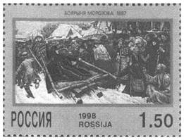
8. Перед вами четыре предложения. Два из них являются теоретическими положениями, которые требуется аргументировать. Другие два содержат факты, которые могут послужить аргументами для этих положений.
1) Внутренняя политика Александра III не сводилась к контрреформам.
2) Контрреформы Александра III были нацелены на минимизацию последствий реформ, проведённых Александром II.
3) В земствах было увеличено представительство гласных из дворян.
4) При Александре III был издан указ, запрещавший применять на производстве труд детей до 12 лет.
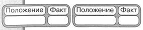
Подберите для каждого теоретического положения соответствующий факт. Номера соответствующих предложений запишите в таблицу.
9. Прочитайте текст, в котором каждое предложение пронумеровано. Данный текст содержит две ошибки. Фрагменты текста, в которых, возможно, сделаны ошибки, подчёркнуты и выделены полужирным шрифтом.
(1) 1 января 1887 г. Н.Х. Бунге ушёл в отставку с поста министра финансов. (2) Его кресло занял профессор И.А. Вышнеградский, крупный изобретатель и удачливый финансист. (3) Одной из главных задач он считал быстрое улучшение состояния денежного обращения в стране. (4) С этой целью Министерство финансов сокращало золотой запас и принимало широкое участие в сделках на зарубежных биржах. (5) В результате при Вышнеградском покупательная способность рубля повысилась. (6) Экономическая программа Вышнеградского предусматривала отказ от привлечения в Россию иностранных капиталов, пересмотр оплаты железнодорожных перевозок, введение винной монополии. (7) На посту министра финансов Вышнеградского сменил С.Ю. Витте.
Укажите номера предложений, в которых есть фрагменты, содержащие ошибки.
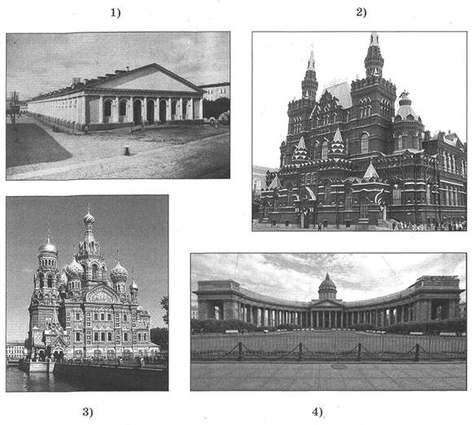
10. Какие памятники архитектуры были построены во второй половине XIX в.?
11. Запишите название памятника архитектуры, обозначенного цифрой 2.
Ответ:
12. Запишите термин, о котором идёт речь.
Добровольное безвозмездное покровительство какому-либо делу, науке, культуре со стороны богатых и влиятельных людей.
Ответ:
13. Прочитайте отрывок из сочинения историка и запишите фамилию, пропущенную в тексте.
В последние годы жизни ____ часто обращается к женским судьбам в своих произведениях. Он пишет комедии, но больше — глубокие социально-психологические драмы о судьбах духовно одарённых женщин в мире практичности и корысти. Выходят в свет «Бесприданница», «Последняя жертва», «Таланты и поклонники» и другие пьесы.
В 1881 г. при дирекции императорских театров организуют специальную комиссию для создания новых законодательных актов по работе театров по всей стране. ____ принимает самое деятельное участие в работе комиссии: пишет множество «записок», «соображений» и «проектов» на тему организации работы в театрах. Благодаря ему принимаются многие изменения, которые значительно улучшают оплату актёрского труда.
Ответ:
14. Заполните пропуск в схеме.
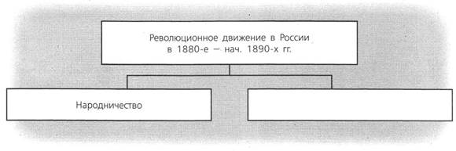
Ответ:
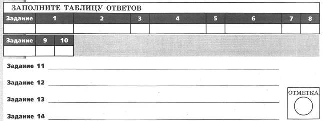
ВАРИАНТ 2
1. Расположите события в хронологическом порядке.
A) создание «Союза борьбы за освобождение рабочего класса»
Б) издание указа, запрещавшего применять на производстве труд детей до 12 лет
B) начало строительства Транссибирской магистрали
Г) вступление на престол Александра III
Запишите получившуюся последовательность букв.
2. Установите соответствие между событиями и годами.
СОБЫТИЯ
A) Земская контрреформа
Б) издание манифеста «О незыблемости самодержавия»
B) издание нового университетского устава
ГОДЫ
1) 1881 г.
2) 1884 г.
3) 1890 г.
4) 1894 г.
Запишите цифры, соответствующие выбранным ответам.
3. Прочитайте отрывок из нормативного акта и выберите два верных суждения.
Считая, по завету и примеру незабвенного родителя нашего, священным долгом своим заботиться о благосостоянии наших верноподданных всякого звания и состояния и следуя его благим предначертаниям о возможно лучшем устройстве крестьянского населения, повелеваем:
...Остающихся ещё в обязательных отношениях к помещикам бывших помещичьих крестьян в губерниях, состоящих на Великороссийском и Малороссийском местных положениях, перевести на выкуп и причислить к разряду крестьян-собственников с 1 января 1883 г. ...
...До перевода... на выкуп... крестьяне сии должны состоять к помещикам в тех же отношениях, в коих находятся к ним ныне; выкуп же крестьянами наделов в собственность может до того времени производиться на существовавших доселе основаниях.
1) В соответствии с данным нормативным актом отменялось временнообязанное состояние крестьян.
2) Данный нормативный акт был издан в 1880 г.
3) «Родитель», о котором говорится в отрывке, — Николай I.
4) Согласно документу, отношения крестьян с помещиками, которые отменялись по данному нормативному акту, должны были сохраняться до перевода крестьян на выкуп.
5) К моменту издания данного нормативного акта уже существовала должность земских начальников.
4. Установите соответствие между событиями (процессами, явлениями) и участниками этих событий (процессов, явлений).
СОБЫТИЯ (ПРОЦЕССЫ, ЯВЛЕНИЯ)
A) деятельность группы «Освобождение труда»
Б) отмена подушной подати
B) исследование деятельности головного мозга
УЧАСТНИКИ
1) Я.И. Ростовцев
2) В.И. Засулич
3) И.М. Сеченов
4) Н.Х. Бунге
Запишите цифры, соответствующие выбранным ответам
5. Какие два из перечисленных утверждений о русских первооткрывателях являются верными?
1) Описание обычаев, быта, культуры жителей Новой Гвинеи составил Н.Н. Миклухо-Маклай.
2) По проекту П.П. Семёнова-Тян-Шанского был построен первый в мире ледокол «Ермак».
3) Издание «Географическо-статистического словаря Российской империи» и книги «Россия. Полное географическое описание нашего отечества» было осуществлено под руководством С.О. Макарова.
4) Во второй половине XIX в. российские учёные не занимались изучением Северного Ледовитого океана.
5) Н.М. Пржевальский исследовал Уссурийский край.
Укажите цифры, соответствующие выбранным ответам.
6. На основе данных статистической таблицы завершите представленные ниже суждения, соотнеся их начала и варианты завершения.
Капиталы, затраченные на постройку железных дорог к 1893 г.
|
Страна |
Общая длина железных дорог, км |
Затраты на всю сеть, млн р. |
Затраты на 1 км, р. |
|
Россия |
32 426 |
1 994 |
61 500 |
|
Германия |
44 339 |
3 414 |
77 000 |
|
Франция |
39 575 |
3 878 |
98 000 |
НАЧАЛО СУЖДЕНИЯ
А) Из стран, представленных в таблице, общая длина железных дорог к 1893 г. была наибольшей в
Б) Из стран, представленных в таблице, затраты на постройку всей железнодорожной сети были наибольшими в
В) На постройку одного километра железной дороги в России тратилось
ВАРИАНТЫ ЗАВЕРШЕНИЯ СУЖДЕНИЯ
1) России.
2) более 70 000 р.
3) Германии.
4) Франции.
5) менее 70 000 р.
Запишите цифры, соответствующие выбранным ответам.
7. Рассмотрите изображение и укажите два верных суждения.
1) Автор картины, фрагмент которой изображён на марке, был членом Товарищества передвижных художественных выставок.
2) Данная марка выпущена к 100-летию со дня рождения художника, написавшего картину, фрагмент которой изображён на марке.
3) Картина, фрагмент которой изображён на марке, была написана в период правления Александра III.
4) Картина, фрагмент которой изображён на марке, свидетельствует о тяжёлых условиях труда бурлаков.
5) В период, когда была написана картина, фрагмент которой изображён на марке, Россия вела войну.
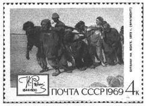
8. Перед вами четыре предложения. Два из них являются теоретическими положениями, которые требуется аргументировать. Другие два содержат факты, которые могут послужить аргументами для этих положений.
1) Сближение России и Франции облегчалось экономическими отношениями.
2) Франция, разгромленная Германией, стремилась к реваншу с помощью России.
3) Сближение Франции с Россией было обусловлено сложными франко-германскими отношениями.
4) Франция ввозила капиталы, вкладывая их в развитие прежде всего русской металлургии.
Подберите для каждого теоретического положения соответствующий факт. Номера соответствующих предложений запишите в таблицу.
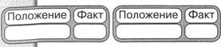
9. Прочитайте текст, в котором каждое предложение пронумеровано. Данный текст содержит две ошибки. Фрагменты текста, в которых, возможно, сделаны ошибки, подчёркнуты и выделены полужирным шрифтом.
(1) 12 июля 1889 г. был издан закон о земских участковых начальниках. (2) Он отменял должности и местные учреждения, основанные на бессословных и выборных началах: земские управы, уездные по крестьянским делам присутствия и мировой суд. (3) В 40 губерниях России создавались 2200 земских участков. (4) Во главе их ставились земские начальники, обладавшие широкими полномочиями. (5) Земский начальник контролировал общинное самоуправление крестьян, вместо мирового судьи рассматривал незначительные судебные дела, утверждал приговоры волостного крестьянского суда, разрешал земельные споры и т.д. (6) Должности земских начальников могли занимать дворяне и купцы. (7) Крестьяне, по сути, были поставлены в личную зависимость от земских начальников, получивших право без суда подвергать их наказаниям, в том числе и телесным.
Укажите номера предложений, в которых есть фрагменты, содержащие ошибки.
Рассмотрите изображения и выполните задания 10-11.
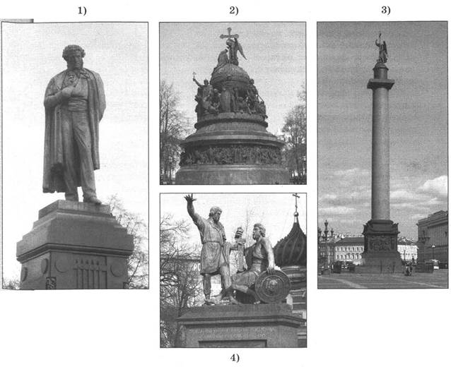
10. Какие из памятников, представленных ниже, были установлены во второй половине XIX в.?
11. Запишите фамилию автора памятника, обозначенного цифрой 1.
Ответ:
12. Запишите термин, о котором идёт речь.
Исключительное право государства на производство и продажу спиртных напитков.
Ответ:
13. Прочитайте отрывок из сочинения историка и запишите название, дважды пропущенное в тексте.
Содружество композиторов ____ возникло на фоне революционно го брожения, охватившего к тому времени умы русской интеллигенции. Бунты и восстания крестьян стали главными социальными событиями того времени, возвратившими деятелей искусства к народной теме. В реализации национально-эстетических принципов, провозглашённых идеологами содружества Стасовым и Балакиревым, наиболее последовательным был М.П. Мусоргский, меньше других — Ц.А. Кюи. Участники ____ систематически записывали и изучали образцы русского музыкального фольклора и русского церковного пения. Результаты своих изысканий в том или ином виде они воплощали в сочинениях камерного и крупного жанра, особенно в операх, среди которых «Царская невеста», «Снегурочка», «Хованщина», «Борис Годунов», «Князь Игорь».
Ответ:
14. Заполните пропуск в схеме.
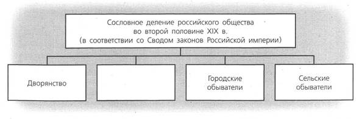
Ответ:
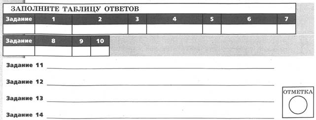
КОНТРОЛЬНАЯ РАБОТА № 2
ВАРИАНТ 1
1. В период царствования Александра III произошло ухудшение отношений между Россией и её бывшей союзницей — Германской империей, создавшей военный союз без участия России. А Россия заключила военный союз с другой европейской страной. Укажите название военного союза, созданного Германией без участия России. Назовите европейскую страну, с которой Россия заключила военный союз в правление Александра III. Укажите один любой факт (кроме создания военных союзов), который свидетельствовал об ухудшении отношений между Россией и Германием в период правления Александра III.
2. Существует точка зрения, согласно которой вторая половина XIX в. — время быстрого и успешного развития российского образования. Приведите два аргумента в подтверждение данной точки зрения.
3. Прочитайте отрывок из воспоминаний помещика и выполните задания.
Интересно и весело смотреть на отношение крестьян к вновь прикупленным землям. Эти земли они особенно любят, на них возлагают надежды, с гордостью смотрят на свои приобретения. Понятно, что прежде всего приобретаются крестьянами самые необходимые для них земли, о которых они постоянно мечтали, которые волей-неволей снимали у владельцев, отрабатывая за них летние работы, трудные для крестьян, мало полезные для владельцев при теперешних условиях. Шла одна канитель. Банк всем развязал руки. Возможность приобретения земель при содействии банка здорово действует, устраняя бесплодные, только раздражающие, неосуществимые мечтания о переделах, вольных землях и пр.
Заботятся крестьяне о своевременной уплате в банк очень, боясь опоздать с уплатой; зорко смотрят в этом отношении друг за другом и имеют огромное нравственное влияние один на другого, побуждая зарабатывать деньги и не упускать случая, когда представляется какая-нибудь работа. Это особенно заметно на исключительных для деревни беспечных лентяях, которые обыкновенно ничего не делали с осени, пока есть хлеб, и ни на какую стороннюю работу не шли. Нахожу даже, что живут крестьяне трезвее; прежде как-то больше спустя рукава жили.
Укажите название банка, о котором идёт речь в данном отрывке. Укажите десятилетие, когда был создан этот банк.
В чём, по мнению автора, проявляются положительные последствия деятельности этого банка? Укажите три последствия.
Какие ещё меры в отношении крестьян (кроме учреждения банка, о котором идёт речь) были приняты в период правления Александра III? Укажите любые две меры.
4. Сравните жизнь (быт) горожан в России в первой и во второй половине XIX в. Самостоятельно сформулируйте линии (критерии) сравнения. Приведите две общие характеристики и два различия. Заполните таблицы.
Общее
|
Линии (критерии) сравнения |
Быт горожан в первой и второй половине XIX в. |
Различия
|
Линии (критерии) сравнения |
Первая половина XIX в. |
Вторая половина XIX в. |
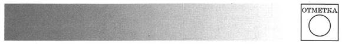
ВАРИАНТ 2
1. В 1863 г. 14 художников, оканчивавших учебное заведение, отказались писать обязательные для получения диплома картины на сюжет из скандинавской мифологии, покинули это учебное заведение. Они создали объединение художников и стали устраивать выставки своих картин в разных городах. Назовите учебное заведение, которое покинули художники. Какое название получили художники, являвшиеся членами объединения? Почему они отказались писать картины на сюжет из скандинавской мифологии?
2. Существует точка зрения, что внешняя политика Александра III была успешной. Приведите два аргумента в подтверждение данной точки зрения.
3. Прочитайте отрывок из сочинения историка и выполните задания.
8 марта совещание это состоялось в Зимнем дворце, и тотчас же на нём обнаружилась борьба двух противоположных, враждебных, исключающих друг друга направлений — одного прогрессивного, во главе которого стоял Лорис-Меликов... Противоположное направление — направление ярко реакционное — представлялось прежде всего ____, назначенным и обер-прокурором Святейшего синода вместо гр. Д.А. Толстого в апреле 1880 г.
На этом совещании вновь обнаружилось, в сущности говоря, довольно ясно, что император Александр III совершенно сочувствует тем речам реакционеров, которые тут были произнесены, и очень несочувственно относится к тем заявлениям, которые были сделаны со стороны либеральной части совещания, особенно ярко это сказалось по поводу заявления, сделанного Д.А. Милютиным, который очень сильно поддерживал выступление Лорис-Меликова, настаивая на необходимости пойти навстречу общественному мнению страны, указывая на то, что опубликование предложенного правительственного сообщения даст сразу симпатичный для общества тон прогрессивности новому царствованию, и в то же время доказывая, что в обсуждаемом докладе Лорис-Меликова не содержится никаких элементов конституции и ограничения самодержавия, а на этом именно пункте и сосредоточились, главным образом, нападки представителей противоположного направления, реакционеров, которые старались доказать, что вся эта мера направлена к конституции, пагубной для России.
Запишите фамилию, пропущенную в тексте. Укажите год, когда состоялось совещание, о котором идёт речь.
Какой проект обсуждался на совещании? Используя отрывок, укажите два аргумента в поддержку проекта, которые использовал в своём выступлении Д.А. Милютин.
Какой документ, ужесточавший порядок управления страной, был издан в тот же год, когда состоялось совещание, о котором идёт речь в отрывке? (Укажите первое слово в названии этого документа.) Укажите смысл одного любого положения этого документа.
4. Сравните развитие образования в России в первой и во второй половине XIX в. Самостоятельно сформулируйте линии (критерии) сравнения. Приведите две общие характеристики и два различия. Заполните таблицы.
Общее
|
Линии (критерии) сравнения |
Развитие образования в первой и второй половине XIX в. |
Различия
|
Линии (критерии) сравнения |
Первая половина XIX в. |
Вторая половина XIX в. |
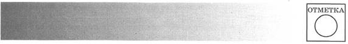